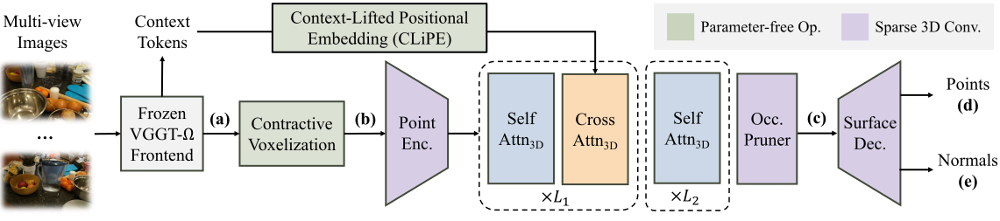

VSurf: Feed-forward Visual Surface Learning
with Structured Scene States
Abstract
Recovering coherent 3D surfaces from multi-view images is a fundamental task in computer vision. Existing visual geometry transformers produce redundant and potentially inconsistent per-view pointmaps, while methods based on spatially unstructured global states struggle to preserve fine-grained geometric details. In this work, we introduce VSurf, a feed-forward framework that reconstructs coherent 3D surfaces from unposed multi-view images. VSurf consolidates noisy multi-view geometry predictions into Structured Scene States, a spatially organized sparse 3D representation that enables global geometric reasoning while preserving local surface details. Specifically, VSurf employs contractive voxelization to accommodate unbounded geometry, followed by a voxel transformer that interleaves global voxel self-attention with cross-attention to frontend context features. We further incorporate 3D geometric priors into cross-attention through a parameter-free positional embedding that lifts frontend context tokens into a shared 3D coordinate space. The resulting scene states are progressively upsampled through a sparse convolutional surface decoder to recover detailed, surface-aligned oriented points. Extensive experiments across diverse datasets demonstrate that VSurf achieves superior geometric accuracy and surface normal consistency over existing feed-forward methods, with consistent improvements across multiple geometry transformer frontends.
Method
A frozen geometry transformer extracts coarse pointmaps and context features from unposed multi-view images. Contractive voxelization and a sparse point encoder construct voxel features, which are consolidated through interleaved global voxel self-attention and voxel-to-context cross-attention. A parameter-free Context-Lifted Positional Embedding (CLiPE) incorporates 3D geometric priors into cross-attention. The refined features are pruned to form Structured Scene States, which are progressively decoded into surface-aligned oriented points. The bottom row illustrates the progression from noisy frontend predictions to coherent surface geometry.

Drag to orbit · Scroll or pinch to zoom · Right-drag or Ctrl/⌘/Shift + drag to pan
Loading method preview…
Qualitative Comparison
Compare 3D reconstructions from VSurf, VGGT-omega, and Surflo across indoor and outdoor scenes. Each method uses the same input views. Explore the colored point clouds to compare scene structure and fine detail, or switch to Normals to inspect surface orientation and consistency. Select a thumbnail below to change scenes. Adjust Point size for clarity, and use Reset view to return to the starting viewpoint.
Loading…
Drag to orbit · Scroll or pinch to zoom · Right-drag or Ctrl/⌘/Shift + drag to pan